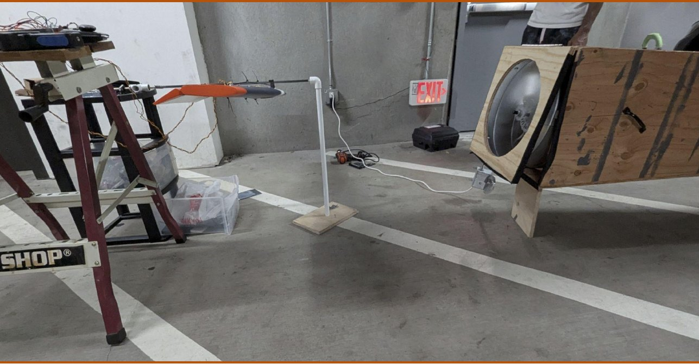

01 / 04 · AeroHydro Research and Technology Associates · Ongoing
Oscillating-Wing Power Generator: Mechanism
- Mechanism Design
- Creo Parametric
- Fusion 360
- 3D Printing
- Design for Fabrication
- Field Testing
- Trade Studies
Overview
Developing a wind power generator that harvests energy by oscillating wings rather than spinning rotor blades, a bird-friendly, lower-noise alternative to wind turbines. My side of it encompasses every design decision except aerodynamic calculations and airfoil geometry optimization. I own the mount, the printed hardware, the travel limiter, and the decisions about what gets fabricated and when.
Technical Approach
Modeling, prototyping, and field validation
Modeled in Fusion 360 and Creo Parametric. Physical prototyping was chosen over CFD on expertise grounds, so every revision was built and field-tested rather than simulated. The drive shaft was dimensioned to the bearings already in the machine rather than the reverse, and the mechanical travel stop's limiter arc is slotted so oscillation amplitude is adjustable on the rig instead of costing a reprint every time the target moves.

Outcomes
- Dimensioned the drive shaft to the bearings already in the machine rather than the reverse, so upgrading the shaft cost no bearings.
- Designed the mechanism's travel stop, winning adoption over the advisor's competing concept on packaging and efficiency grounds.
- Slotted the limiter arc so oscillation amplitude is adjustable on the rig instead of costing a reprint every time the target moves.
Challenges
- I spent two days trying to make a 3D-printed wing work before accepting that the servo linkage was beyond what I could fabricate. Abandoning my own part and writing purchase criteria for a bought one took me longer than it should have.
- Proposing my own limiter design against my advisor's was harder than designing it. He is a distinguished professor emeritus and I was a first-year, so the case had to rest on packaging and efficiency, because nothing else I had would carry it.
- Two rulings on that limiter contradicted each other: one kept it an untouched failsafe, a later one asked it to return energy at the extremes of travel. Holding the part out of fabrication until that resolved cost schedule I did not have.
- The last field campaign ran against a fixed departure date and the printed parts never arrived, so I improvised the rig back onto the previous drive shaft. It worked, and I recorded in the same document that the configuration is not reproducible.